Regression Discontinuity
EC655 - Econometrics
Justin Smith
Wilfrid Laurier University
Fall 2023

Introduction
Introduction
RD is a popular method to identify causal treatment effects
The method mimics a randomized experiment
People are assigned to treatment or not based on some known continuous variable
- Those above some “cutoff” are given the treatment
Around the cutoff people share similar characteristics, except for the treatment
Thus, looking at outcome differences for those just above cutoff compared to just below will reveal causal effect of treatment
It identifies a local LATE
It is LATE in the sense we defined in instrumental variables
Also, it focuses on people in the immediate vicinity of the discontinuity
Example
Example: Milligan and Lemieux (2008)
Effect of social assistance on employment
- Extra dollars of social assistance is the treatment
Amount of social assistance determined by age
Before 1989, 30+ year olds got roughly $550 in monthly benefits
Those under 30 got roughly $200
Treatment is getting more social assistance
People around age 30 are roughly similar on average
Compares employment rates for 30 year olds to those just under 30
- At the cutoff, the only difference between 2 groups is benefit level
Reveals causal effect of getting more benefits on employment
Results show more benefits means lower employment rates
Sharp Regression Discontinuity
Setup
RD is best understood visually
Suppose we have potential outcomes \(y_{0}\) and \(y_{1}\)
\(y_{0}\) is the outcome if not treated
\(y_{1}\) is the outcome if treated
Both potential outcomes are continuous functions of some variable \(S\)
- \(S\) is called the “running variable” or “forcing variable”
In the example paper, \(S\) is age
\(y_{0}\) is employment rate with normal benefits
\(y_{1}\) is employment rate with extra benefits
Graph below plots example CEFs as a function of \(S\)
CEF of Potential Outcomes

Treatment Assignment
In RD, treatment is assigned based on the value of \(S\) relative to a cutoff \(\bar{S}\)
In graph above suppose \(\bar{S} = 5\)
Those with \(S\ge \bar{S}\) get the treatment
Those with \(S< \bar{S}\) do not get the treatment
If the treatment variable is \(w\) then
\[w = 1[S\ge \bar{S}]\]
In the example paper, \(w\) is a dummy for getting extra benefits
- \(\bar{S} = 30\) years old and \(w=1\) happens when \(S\ge 30\)
Observed Value of the Outcome
Recall that the observed outcome \(y = y_{0} + (y_{1} - y_{0})w\)
- \(y = y_{0}\) if \(w=0\), \(y = y_{1}\) if \(w=1\)
Since \(w = 1[S\ge \bar{S}]\) we can write
- \(y = y_{0}\) if \(S< \bar{S}\), \(y = y_{1}\) if \(S\ge \bar{S}\)
We can then draw the CEF \(E[y|S]\) on the graph
- Black line is the CEF of \(E[y|S]\)
- Red lines are the (unobserved) potential outcomes
Observed Value of the Outcome
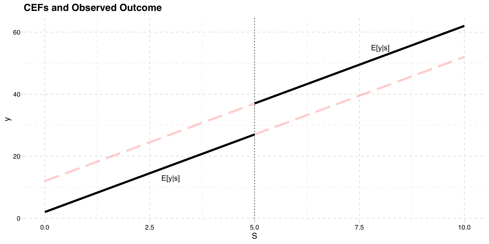Bias in Regression
- Consider the population least squares regression of \(y\) on \(w\)
\[y = \beta_{0} + \beta_{1}w + u \]
- The slope in this regression is
\[E[y|w=1] - E[y|w=0]\] \[= E[y_{1} - y_{0}|w=1] + E[y_{0}|w=1]- E[y_{0}|w=0]\]
Selection bias does not disappear because \(y_{0}\) is not independent of treatment
The mean of \(y_{0}\) above the cutoff is not the same as below the cutoff
Example: untreated employment outcomes are different for older and younger people
Conditional Mean Independence
What if we instead condition on \(S\)?
\[E[y|S,w=1] - E[y|S,w=0]\] \[= E[y_{1} - y_{0}|S,w=1] + E[y_{0}|S,w=1]- E[y_{0}|S,w=0]\]
In this case, selection bias will disappear because treatment is determined by \(S\)
- So holding \(S\) fixed, mean \(y_{0}\) is independent of treatment
In our example, people of the same age have the same average untreated outcome
Because \(E[y_{0}|S] = E[y_{0}|S, w]\) we can write
\[E[y|S,w=1] - E[y|S,w=0] = E[y_{1} - y_{0}|S,w=1] \]
- This is the ATT conditional on \(S\)
Conditional Mean Independence
Problem: we cannot compute \(E[y|S, w = 1] - E[y|S, w = 0]\)
Because \(w=1\) only for those with \(S\ge \bar{S}\)
And \(w=0\) only for those with \(S< \bar{S}\)
There is no “overlap” in these functions
- No spot in the graph with two solid lines at a value of \(S\)
Conditional Mean at Cutoff
- RD solves this problem by focusing on the treatment cutoff
\[E[y|S = \bar{S}] - lim_{S\uparrow \bar{S}} E[y|S]\] \[= E[y_{1} - y_{0}|S = \bar{S}] +E[y_{0}|S = \bar{S}]- lim_{S\uparrow \bar{S}}E[y_{0}|S]\]
- The key assumption is the that \(E[y_{0}|S = \bar{S}]\) is continuous at \(S=\bar{S}\)
\[E[y_{0}|S = \bar{S}] = lim_{S\uparrow \bar{S}} E[y_{0}|S]\]
- If this is true, selection bias disappears and we get the ATT at the cutoff
\[E[y|S = \bar{S}] - lim_{S\uparrow \bar{S}} E[y|S] =E[y_{1} -y_{0} |S = \bar{S}]\]
Observed Value of the Outcome
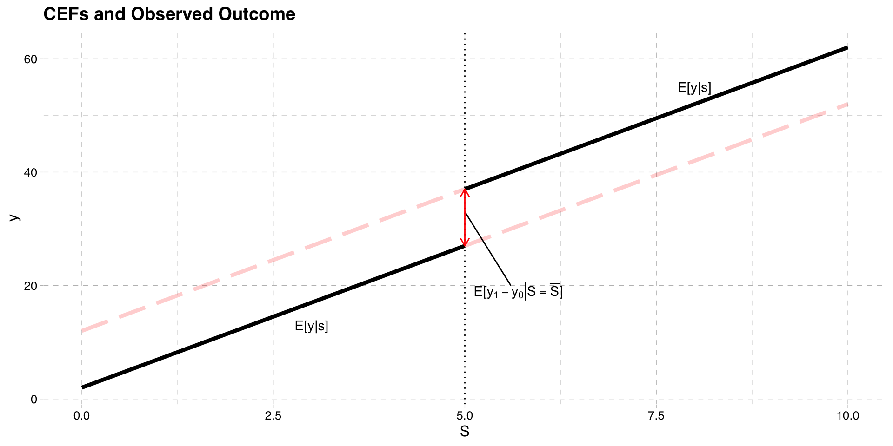Conditional Mean at Cutoff
The idea behind these assumptions is
Compare average observed outcome just above cutoff to average outcome just below
They serve as good counterfactuals if potential outcomes not affected by treatment
e.g. social assistance benefits and employment
Compare mean employment rate for people just above and below age 30
Works if employment rates smooth across age 30 without treatment
Conditional Mean at Cutoff
We plotted CEFs of potential outcomes assuming they are linear with equal slopes
They do not have to be
The two graphs below present situations where
Potential outcomes are linear with different slopes
They are nonlinear
Linear CEF with Unequal Slopes
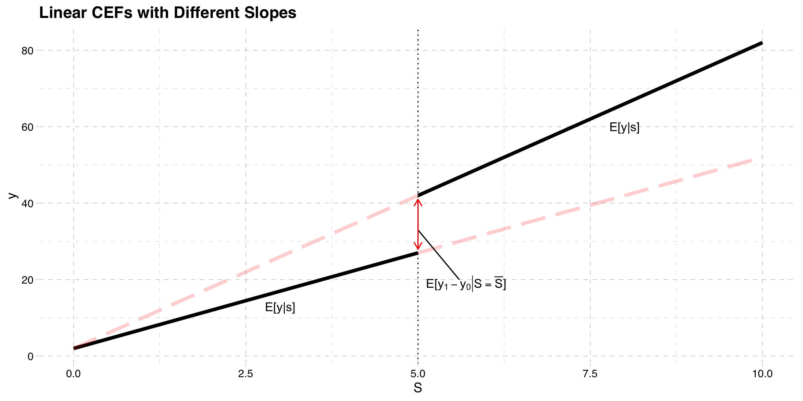Nonlinear CEF
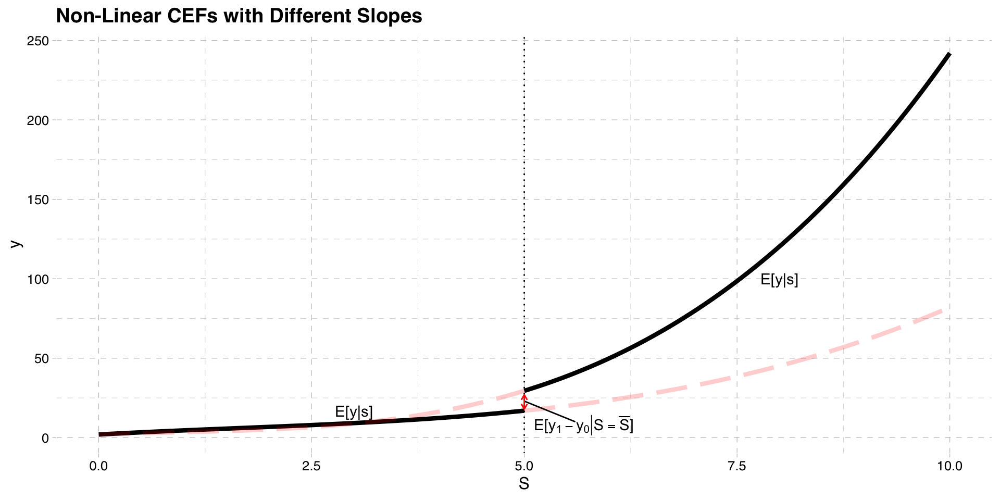Summary of Model
- The key result is
\[E[y|S = \bar{S}] - lim_{S\uparrow \bar{S}} E[y|S] =E[y_{1} -y_{0} |S = \bar{S}] \]
This works as long as \(E[y_{0}|S = \bar{S}]\) is continuous at \(S=\bar{S}\)
Thus, RD estimates an average treatment effect at the cutoff point
As before, we do not know the conditional expectation, so we must estimate
There are various ways, but we will cover OLS regression
Estimation
To estimate we need to approximate the function \(E[y|S]\)
We can use a population linear regression of \(y\) on \(S\), and estimate that by OLS
Important: we must allow for an intercept shift at the cutoff point \(\bar{S}\)
- This is the approximation of \(E[y_{1} -y_{0} |S = \bar{S}]\)
The simplest linear model is
\[y = \beta_{0} + \beta_{1} S+\rho w + u\]
- This is a straight line that jumps at \(\bar{S}\) by \(\rho\)
Linear Population Regression Function
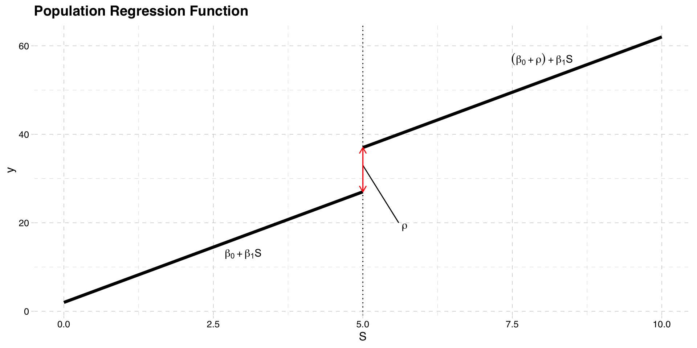Estimation
To estimate the PRF, we can use OLS
Replace the population parameters with sample estimates
\[y = \hat{\beta}_{0} + \hat{\beta}_{1} S+\hat{\rho} w + \hat{u}\]
- The estimate of \(\rho\) is the difference in predicted \(y\) at the cutoff point
\[\hat{\rho} = (\hat{\beta}_{0} + \hat{\beta}_{1} S+\hat{\rho}) - (\hat{\beta}_{0} + \hat{\beta}_{1} S)\]
Estimation
- A more complicated PRF allows the slope to differ on either side of the cutoff point
\[y = \beta_{0} + \beta_{1} S+\rho w + \beta_{2}(S \times w) + u\]
- The interaction term allows the slope to differ on either side of the cutoff point
\[\frac{\partial y}{\partial S} = \beta_{1} + \beta_{2} w\]
- When \(w = 1\) the slope changes by \(\beta_{2}\)
Estimation
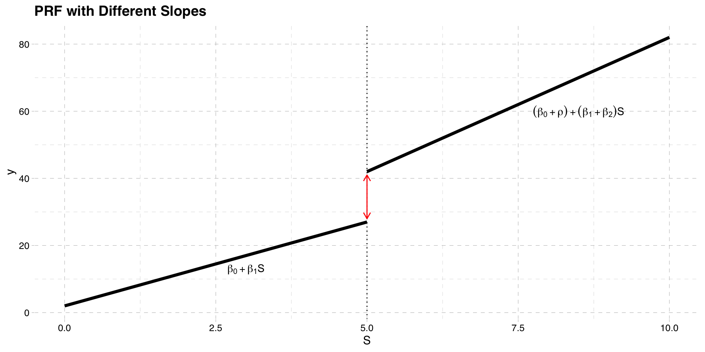Estimation
Problem: as specified, \(\rho\) does not measure the jump at the cutoff
Call the prediction of \(y\) at values of \(S\) and \(w\) \(P[y|S, w]\)
\[P[y|S, w=1] - P[y|S, w=0] \] \[= (\beta_{0} + \beta_{1} S+ \rho + \beta_{2}S) - (\beta_{0} + \beta_{1} S) \] \[= \rho + \beta_{2} S \]
- \(\rho\) is therefore the jump when \(S = 0\), not when \(S=\bar{S}\)
Estimation
To ensure \(\rho\) is the jump at the cutoff, we must center \(S\) at the cutoff point
Define \(S_{c} = S - \bar{S}\)
Replace \(S\) with \(S_{c}\) in the PRF
\[y = \beta_{0}^{*} + \beta_{1} S_{c}+\rho^{*} w + \beta_{2}(S_{c} \times w) + u\]
- Difference in the PRF is now
\[P[y|S_{c}, w=1] - P[y|S_{c}, w=0] \] \[= \rho^{*} + \beta_{2} S_{c} \]
- This occurs at the cutoff: \(S_{c} = S - \bar{S}\) when \(S = \bar{S}\)
Estimation

Estimation
- To estimate \(\rho^{*}\) replace the population parameters with sample estimates
\[y = \hat{\beta}_{0}^{*} + \hat{\beta}_{1} S_{c}+\hat{\rho}^{*} w + \hat{\beta}_{2}S_{c} \times w + \hat{u}\]
Prior to running OLS regression, ensure you create \(S_{c} = S - \bar{S}\)
\(\hat{\rho}^{*}\) is the regression discontinuity estimate of the treatement effect
Fuzzy Regression Discontinuity
Setup
We still have potential outcomes \(y_{0}\) and \(y_{1}\) that are functions of \(S\)
Graph below plots their CEFs again as a function of \(S\)
The cutoff point is still \(\bar{S}\)
CEF of Potential Outcomes
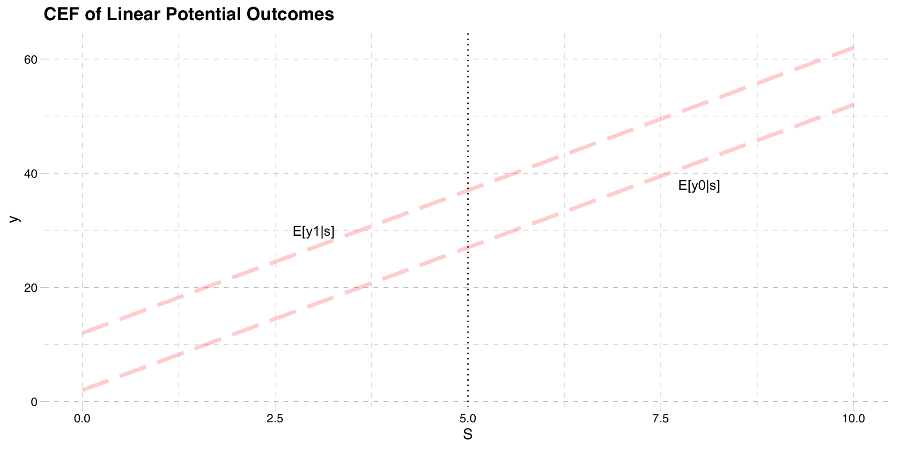Treatment
The treatment is now only partially determined by \(S\)
People are assigned to treatment if \(S > \bar{S}\)
But they may not take it, so actual treatment could differ
Suppose that assignment to treatment is \(z\)
\[z = 1[S > \bar{S}]\]
- Actual treatment is determined by \(w\)
\[w = w_{0} + (w_{1} - w_{0})z\]
- The potential treatments are functions of \(S\)
- The observed treatment is \(w_{0}\) if \(S \leq \bar{S}\) and \(w_{1}\) if \(S > \bar{S}\)
CEF of Treatment
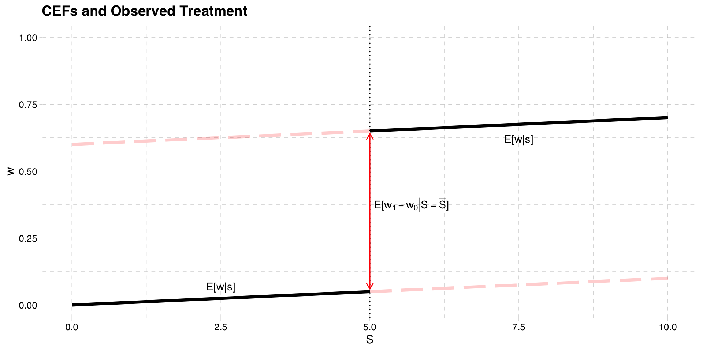Observed Outcomes
Like before we can plot the CEF of the observed outcome
Unlike before
\[E[y|S \ge \bar{S}] \neq E[y_{1}|S \ge \bar{S}]\] \[E[y|S < \bar{S}] \neq E[y_{0}|S < \bar{S}]\]
- This is because actual treatment can deviate from assigned treatment
Observed Outcomes
- To find the CEF of the observed outcome remember
\[y = y_{0} + (y_{1} - y_{0})w\]
- Rearrange
\[ y = y_{0}(1-w) + y_{1}w\]
- Take expectations conditional on \(S\)
\[E[y|S] = E[y_{0}|S] (1-E[w|S]) + E[y_{1}|S]E[w|S]\]
CEF of Observed Outcome

Treatment Effect
Computing the treatment effect is more complicated
It operates like the TSLS model we saw before
\(z\) is as an instrument for \(w\)
Treatment effect is ratio of mean difference in \(y\) to mean difference in \(w\)
The treatment effect is a LATE, at the cutoff
Treatment Effect
- Difference in CEF on each side of the cutoff
\[E[y|S = \bar{S}] - lim_{S\uparrow \bar{S}} E[y|S]\]
- Replace \(y\) with \(y = y_{0} + (y_{1} - y_{0})w\)
\[= E[y_{0} + (y_{1} - y_{0})w|S = \bar{S}] - lim_{S\uparrow \bar{S}} E[y_{0} + (y_{1} - y_{0})w|S]\]
- When \(S \ge \bar{S}\) then \(w = w_{1}\) and when \(S < \bar{S}\) then \(w = w_{0}\)
\[= E[y_{0} + (y_{1} - y_{0})w_{1}|S = \bar{S}] - lim_{S\uparrow \bar{S}} E[y_{0} + (y_{1} - y_{0})w_{0}|S]\]
Model
- Performing a bit of algebra, we get
\[= E[(y_{1} - y_{0})(w_{1}-w_{0})|S = \bar{S}] + (E[y_{0}|S = \bar{S}] - lim_{S\uparrow \bar{S}} E[y_{0} |S] )\]
- If \(E[y_{0}|S = \bar{S}]\) is continuous at the cutoff, we can drop the second term
\[= E[(y_{1} - y_{0})(w_{1}-w_{0})|S = \bar{S}] \]
CEF of Observed Outcome
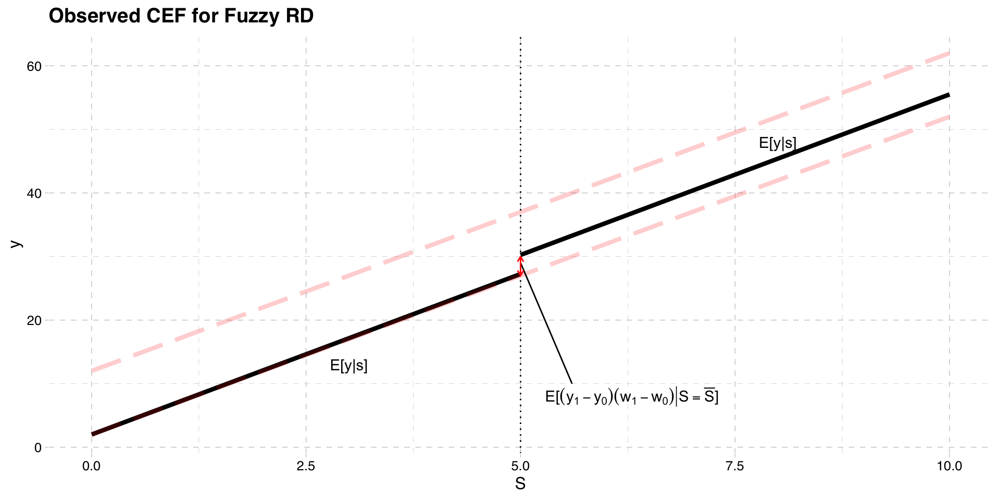Model
- If we make a monotonicity assumption (as we did in the LATE notes)
\[ E[(y_{1} - y_{0})(w_{1}-w_{0})|S = \bar{S}] = E[y_{1} - y_{0}|w_{1}-w_{0}=1,S = \bar{S}] E[w_{1} - w_{0}|S = \bar{S}]\]
- The CEF for \(w\) is
\[E[w|S = \bar{S}] - lim_{S\uparrow \bar{S}} E[w|S] = E[w_{1} - w_{0}|S = \bar{S}] \]
- Which brings us to
\[\frac{E[y|S = \bar{S}] - lim_{S\uparrow \bar{S}} E[y|S] }{E[w|S = \bar{S}] - lim_{S\uparrow \bar{S}} E[w|S] } = E[y_{1} - y_{0}|w_{1}-w_{0}=1,S = \bar{S}]\]
Visualizing Fuzzy RD
Model
In the fuzzy RD we divide the mean difference in outcomes by the mean difference in treatment
- This “scales” the difference in outcomes by the difference in treatment probability
The interpretation is a LATE
- The treatment effect for compliers, at the cutoff
Just like sharp RD, you can allow different slopes, nonlinearities
Estimation
Estimate using TSLS
Treat \(w\) as endogenous, and \(z\) as an exogenous instrument
\(S\) is the included instrument
A linear structural model would be
\[y = \beta_{0} + \beta_{1} S+\rho w + e\]
- With first stage
\[w = \alpha_{0} + \alpha_{1} S + \pi z + u\]
Estimation
- Estimating by TSLS the vector of coefficients is
\[\boldsymbol{\hat{\beta}} = \left( \mathbf{\mathbf{\hat{X}}'\mathbf{\hat{X}}} \right)^{-1}\mathbf{\mathbf{\hat{X}}'y} = \begin{bmatrix} \hat{\beta}_{0}\\ \hat{\beta}_{1}\\ \hat{\rho} \end{bmatrix}\]
The \(\hat{X}\) matrix contains the constant, \(S\), and \(\hat{w}\)
As before you can add different slopes, nonlinearities
- Ensure you recenter the \(S\) variable around the cutoff
Milligan and Lemieux (2008)
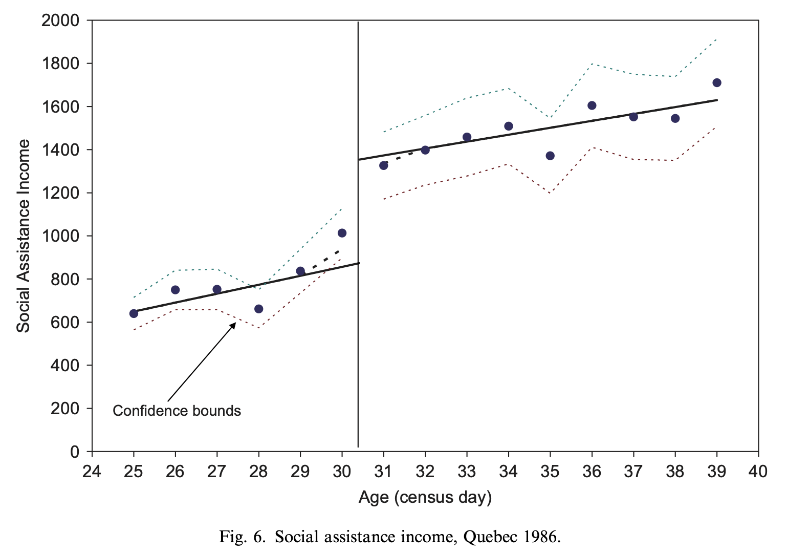
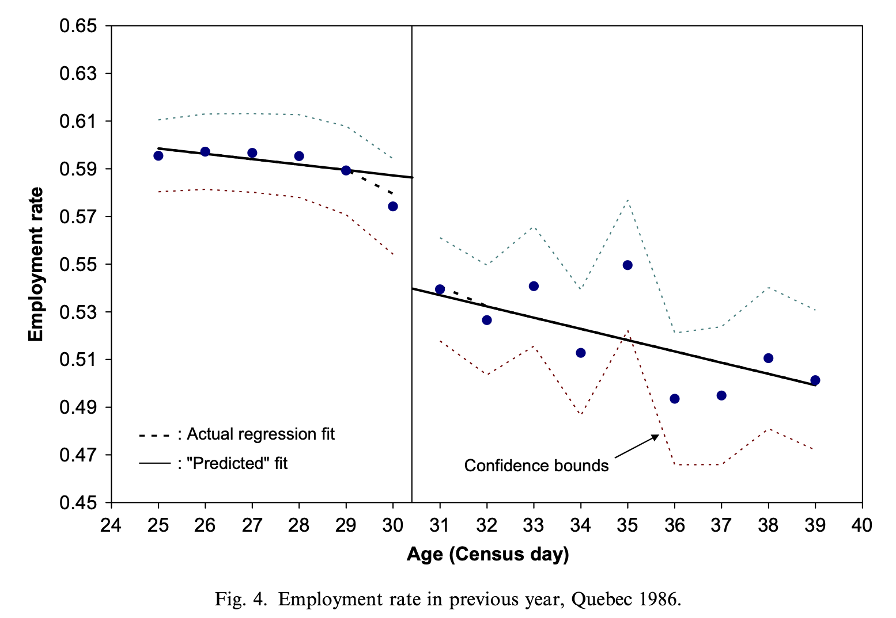
Internal Validity of RD
The treatment variable does not have to be binary
- See van der Klaauw (2001), Matsudaira (2008)
The method only works if the running variable \(S\) cannot be manipulated
Ex: Matsudaira (2008)
Effect of summer school on future performance with 50% grade cutoff
Kids may know the assignment rule to summer school
Some more “motivated” kids put in effort to not attend
Their non-treated outcomes differ on each side of the cutoff
i.e. \(E[y_{0}|S = \bar{S}] = lim_{S\uparrow \bar{S}} E[y_{0}|S]\)
If running variable is manipulated in a non-random way, RD is invalid and biased
Internal Validity of RD
Two ways to check if the running variable has been manipulated
Check for discontinuities in baseline variables
Treatment is expected to be discontinuous; this is where our variation comes from
However, near the discontinuity, any other variable must be continuous
If we had covariates (\(X\)) determined before treatment, we could check to see if they have discontinuities \[x=\gamma_{0} + \gamma_{1}S + \delta z + u\]
If \(\delta \neq 0\), then this may signal a problem
Check for discontinuities in the density of the running variable
A histogram may show “piling up” of people on one side of discontinuity
If so, this may signal a problem
See McCrary(2008) for more technical details
External Validity of RD
External validity is the ability to extrapolate estimates
RD estimates are local to the cutoff
If there are heteogeneous treatment effects, may not be able to apply to whole population
- Ex: Estimates of benefits on employment for 30 year olds may not apply to 50 year olds
- Ex: Estimates of summer school on test scores for kids around 50% may not apply to high achievers
Must be careful not to overinterpret results